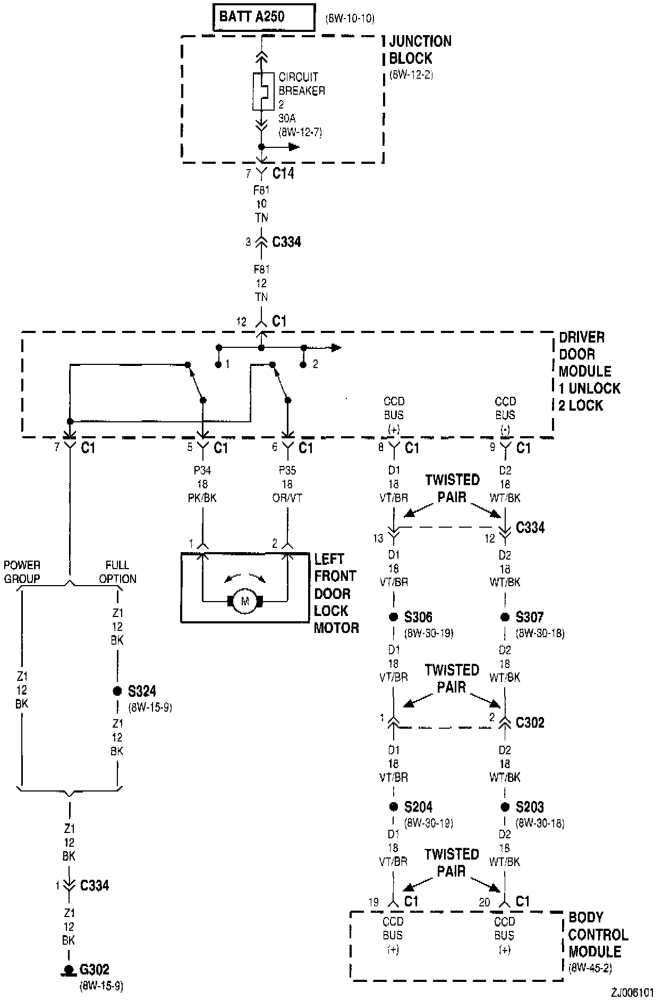
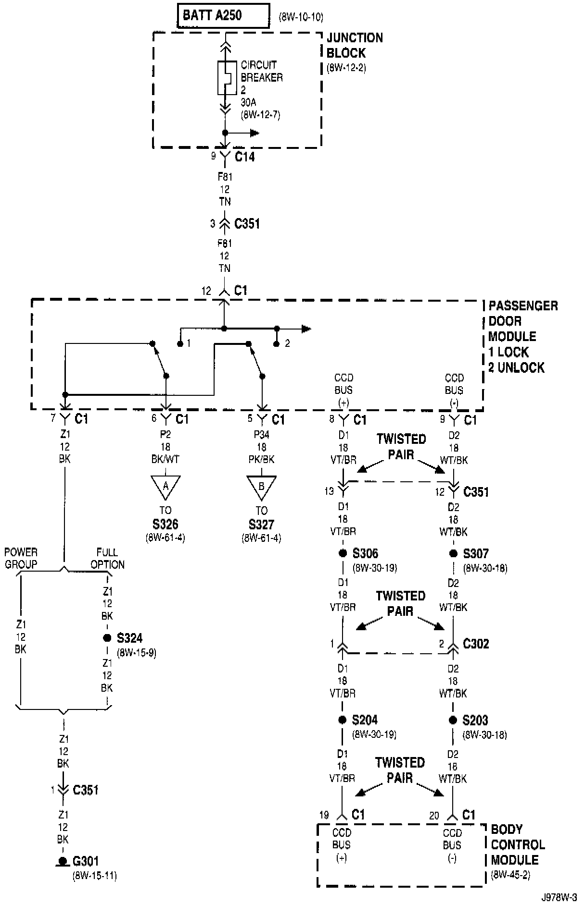
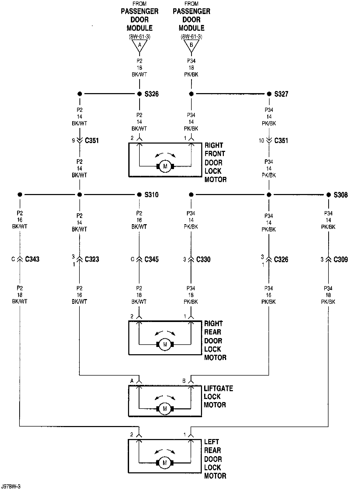
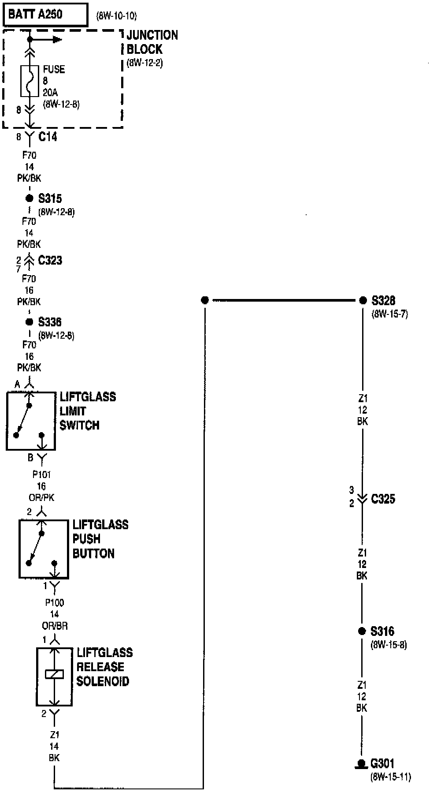

System Diagram
Power Door Locks (Part 1 Of 4):

Power Door Locks (Part 2 Of 4):

Power Door Locks (Part 3 Of 4):

Power Door Locks (Part 4 Of 4):

NOTE: To view sheets referred in these diagrams, see Diagram Information and Instructions/Complete Body and Chassis